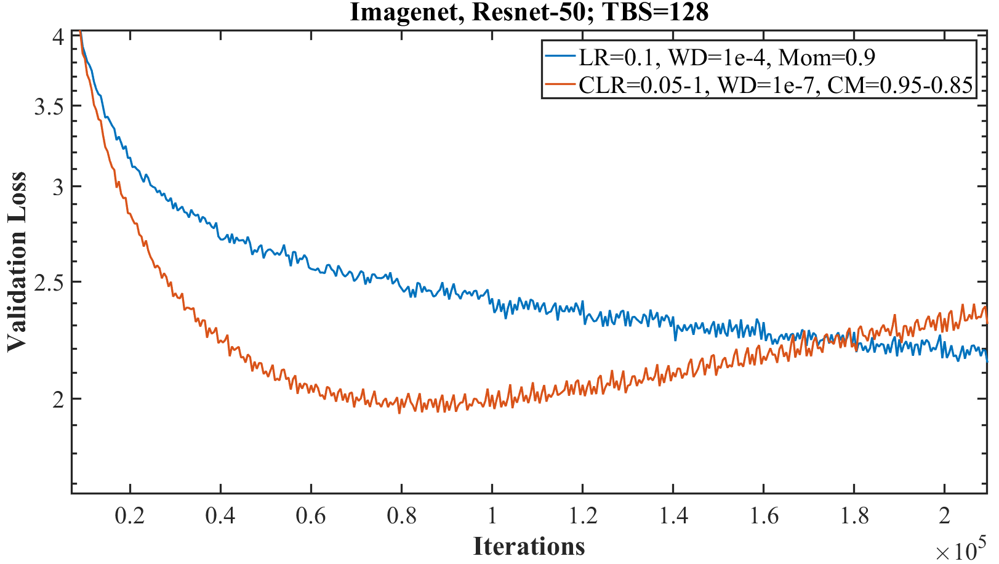
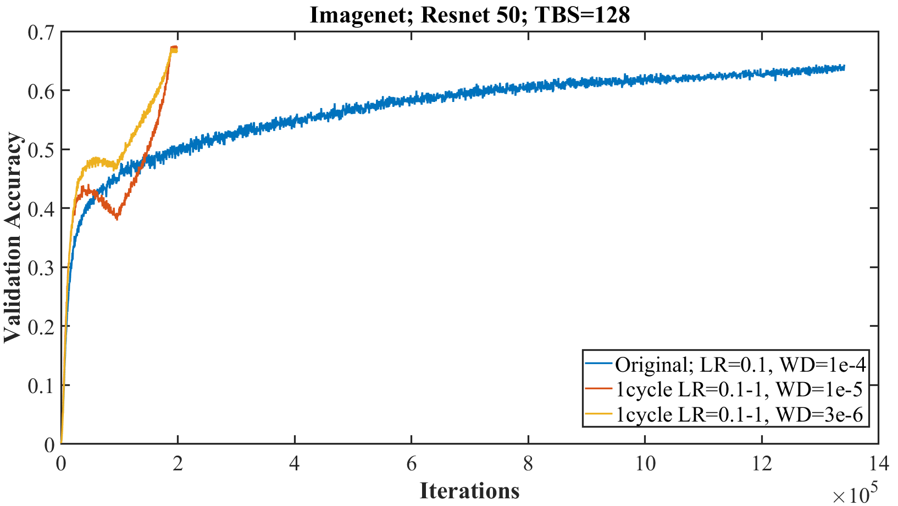

<!doctype html>
<html lang="en">
    <head>
        <meta charset="utf-8">
        <meta name="viewport" content="width=device-width, initial-scale=1.0, maximum-scale=1.0, user-scalable=no">

        <title>Learning Rate Finder</title>
        <link rel="stylesheet" href="./css/reveal.css">
        <link rel="stylesheet" href="./css/theme/moon.css" id="theme">
        <link rel="stylesheet" href="./css/highlight/zenburn.css">
        <link rel="stylesheet" href="./css/print/paper.css" type="text/css" media="print">


    </head>
    <body>

        <div class="reveal">
            <div class="slides"><section  data-markdown><script type="text/template">
## Intro

Scott Mueller

###### smueller.tampa.ai@gmail.com
</script></section><section  data-markdown><script type="text/template">## Tampa.ai

Looking for Presenters

</script></section><section  data-markdown><script type="text/template">## A disciplined approach to neural network hyper-parameters: Part 1 – learning rate, batch size, momentum, and weight decay

https://arxiv.org/abs/1803.09820

</script></section><section  data-markdown><script type="text/template">* Super Convergence
* R1: Unreasonable Effectiveness of Validation/Test Loss
* R2: Horizontal Part of Test Loss
* Underfitting
* Overfitting
* Cyclical Learning Rates
</script></section><section  data-markdown><script type="text/template">* R3: Amount of Regularization Must Be Balanced
* R4: Highest Performance Minimizing Computational Time
* R5: Optimial Momentum Improves Network Training
* R6: Weight Decay is Key Knob for Tuning Regularization
* Short Recipe
</script></section><section  data-markdown><script type="text/template">## Super Convergence

</script></section><section  data-markdown><script type="text/template">## Cyclical Learning Rate vs One Cycle

</script></section><section  data-markdown><script type="text/template">## Unreasonable Effectiveness OF Validation/Test Loss

</script></section><section  data-markdown><script type="text/template">## R1: Test Loss Indicator of Network's Convergence

</script></section><section  data-markdown><script type="text/template">## Underfitting

</script></section><section  data-markdown><script type="text/template">## R2: Horizontal Part of Test Loss

</script></section><section  data-markdown><script type="text/template">## Learning Rate Range Test

</script></section><section  data-markdown><script type="text/template">## Overfitting

</script></section><section  data-markdown><script type="text/template">## Cyclical Learning Rate

</script></section><section  data-markdown><script type="text/template">## One Cycle


</script></section><section  data-markdown><script type="text/template">## R3: Amount of Regularization Must Be Balanced

* Large Learning Rates

* Small Batch Sizes

* Weight Decay

* Dropout
</script></section><section  data-markdown><script type="text/template">## Batch Size Effect on Test Loss

</script></section><section  data-markdown><script type="text/template">## R4: Highest Performance Minimizing Computational Time

</script></section><section  data-markdown><script type="text/template">## R5: Optimial Momentum Improves Network Training


Momentum Rate Finder Not Useful
</script></section><section  data-markdown><script type="text/template">## Cyclical Momentum Opposite of Learning Rate Cycle


High Momentum when LR small, vice versa
</script></section><section  data-markdown><script type="text/template">## R6: Weight Decay is Key Knob for Tuning Regularization


Easier to determine best WD from test loss
</script></section><section  data-markdown><script type="text/template">## Everything Together

</script></section><section  data-markdown><script type="text/template">## Short Recipe

* Learning Rate Range Test - Determine Max LR
 
  - Use 1 Cycle

* Batch size from your GPU size

* Cyclical Momentum in opposite direction from Cyclical LR

* Weight Decay - Grid Search to 1 significant figure

  - Complex datasets less regulation so smaller values 0.0001 - 0.000001
</script></section><section  data-markdown><script type="text/template">## Hyperparameter Clues are in Test Loss - Early in Training


</script></section><section  data-markdown><script type="text/template">## One Cycle Focused on Adam Optimization

* Newer Optimizations may Require Different Approaches

  - Ranger (High LR for a while & Cosine Decay)
</script></section><section  data-markdown><script type="text/template">
[Knowfalls.com](https://knowfalls.com/team.html)

###### scottmueller@knowfalls.com

Looking for Founder Engineers

Elixir, Functional Programming, Rails, Experience
</script></section><section  data-markdown><script type="text/template">
https://iconof.com/1cycle-learning-rate-policy
</script></section><section  data-markdown><script type="text/template">Early Fast.ai V2 Walkthrough Lessons

https://forums.fast.ai/t/a-walk-with-fastai2-study-group-and-online-lectures-megathread/59929</script></section></div>
        </div>

        <script src="./lib/js/head.min.js"></script>
        <script src="./js/reveal.js"></script>

        <script>
            function extend() {
              var target = {};
              for (var i = 0; i < arguments.length; i++) {
                var source = arguments[i];
                for (var key in source) {
                  if (source.hasOwnProperty(key)) {
                    target[key] = source[key];
                  }
                }
              }
              return target;
            }

            // Optional libraries used to extend on reveal.js
            var deps = [
              { src: './lib/js/classList.js', condition: function() { return !document.body.classList; } },
              { src: './plugin/markdown/marked.js', condition: function() { return !!document.querySelector('[data-markdown]'); } },
              { src: './plugin/markdown/markdown.js', condition: function() { return !!document.querySelector('[data-markdown]'); } },
              { src: './plugin/highlight/highlight.js', async: true, callback: function() { hljs.initHighlightingOnLoad(); } },
              { src: './plugin/zoom-js/zoom.js', async: true },
              { src: './plugin/notes/notes.js', async: true },
              { src: './plugin/math/math.js', async: true }
            ];

            // default options to init reveal.js
            var defaultOptions = {
              controls: true,
              progress: true,
              history: true,
              center: true,
              transition: 'default', // none/fade/slide/convex/concave/zoom
              dependencies: deps
            };

            // options from URL query string
            var queryOptions = Reveal.getQueryHash() || {};

            var options = {"transition":"fade"};
            options = extend(defaultOptions, options, queryOptions);
        </script>


        <script>
          Reveal.initialize(options);
        </script>
    </body>
</html>
